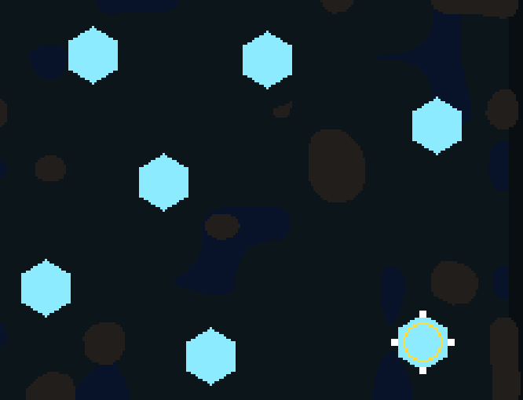

<title>Soldiers at the Crystal Rim</title>
<meta name="claude:viewport-fit-sides" content="cover">
<style>
/* Layout: one narrow column, the clip first, then its counts. */
:root{--bg:#f3f5f6;--fg:#172026;--muted:#5a6870;--line:#d3dbdf;--accent:#2a8fa8;--panel:#ffffff;
--display:"Space Grotesk",system-ui,sans-serif;--body:"Inter",system-ui,sans-serif}
@media (prefers-color-scheme:dark){:root:not([data-theme="light"]){--bg:#0e1418;--fg:#e2eaee;--muted:#93a3ab;--line:#26323a;--accent:#6cc8de;--panel:#151e24;color-scheme:dark}}
:root[data-theme="dark"]{--bg:#0e1418;--fg:#e2eaee;--muted:#93a3ab;--line:#26323a;--accent:#6cc8de;--panel:#151e24;color-scheme:dark}
body{background:var(--bg);color:var(--fg);font-family:var(--body);line-height:1.55;padding-left:max(16px,env(safe-area-inset-left,0px));padding-right:max(16px,env(safe-area-inset-right,0px));padding-block:28px}
main{max-width:760px;margin:0 auto;display:flex;flex-direction:column;gap:18px}
h1{font-family:var(--display);font-size:1.7rem;margin:0;text-wrap:balance}
h2{font-family:var(--display);font-size:1.15rem;margin:8px 0 0}
p{margin:0;max-width:65ch}
.muted{color:var(--muted);font-size:.9rem}
figure{margin:0;background:var(--panel);border:1px solid var(--line);border-radius:8px;padding:10px}
figure img{display:block;width:100%;image-rendering:pixelated;border-radius:4px}
figcaption{color:var(--muted);font-size:.85rem;margin-top:8px}
.tw{overflow-x:auto}
table{border-collapse:collapse;font-variant-numeric:tabular-nums;font-size:.92rem;min-width:420px}
th,td{text-align:left;padding:6px 10px;border-bottom:1px solid var(--line)}
th{color:var(--muted);font-weight:600}
</style>
<link rel="stylesheet" href="https://fonts.googleapis.com/css2?family=Inter:wght@400;600&family=Space+Grotesk:wght@600&display=swap">
<main>
<h1>Soldiers at the crystal rim</h1>
<p>You asked that soldiers not stand on top of a crystal. Now a crystal with charge left is ground they walk round. They harvest, bank and build from its edge, and as they eat it from the outside in, the solid part shrinks so they step in after the charge.</p>
<figure>

<figcaption>Farm hand, race world seed 5, 0-45 s, one frame a game second, 3x zoom on the right of the map. White squares are soldiers; the yellow ring is the larder. Bites in the hexagons are where they take charge from.</figcaption>
</figure>
<h2>Smoke check, rule on against off</h2>
<p class="muted">Race world, seeds 5-15, 900 s cap, stopped part way under your 17:26 rule that a census is not a gate. Paired by seed: how often the score with the rule on was higher or lower.</p>
<div class="tw"><table>
<tr><th>hand</th><th>on higher</th><th>on lower</th><th>mean harvest on</th><th>off</th></tr>
<tr><td>idle</td><td>3</td><td>8</td><td>0</td><td>0</td></tr>
<tr><td>random</td><td>7</td><td>3</td><td>10,078</td><td>1,906</td></tr>
<tr><td>farm</td><td>3</td><td>7</td><td>49,454</td><td>49,904</td></tr>
<tr><td>wall</td><td>5</td><td>5</td><td>47,217</td><td>47,432</td></tr>
<tr><td>ring</td><td>1</td><td>9</td><td>50,164</td><td>49,331</td></tr>
<tr><td>pumps</td><td>0</td><td>10</td><td>54,734</td><td>56,724</td></tr>
<tr><td>army</td><td>3</td><td>7</td><td>63,923</td><td>63,649</td></tr>
</table></div>
<p>No game ended in the first minute, idle still loses every seed, and harvests are about even. Plans score a little lower with the rule on because walking round crystals takes time. That is balance, left for later.</p>
</main>
